산업안전기사 (2016-03-06 기출문제)
1과목: 안전관리론
1. 맥그리거(McGregor)의 Y이론과 관계가 없는 것은?
- 직무확장
- 책임과 창조력
- 인간관계 관리방식
- 권의주의적 리더십
(정답률: 83%)

2. 산업안전보건법령상 사업 내 안전ㆍ보건 교육 중 채용시의 교육 내용에 해당되지 않는 것은? (단, 기타 산업안전 보건법 및 일반관리에 관한 사항은 제외한다.)(관련 규정 개정전 문제로 여기서는 기존 정답인 4번을 누르면 정답 처리됩니다. 자세한 내용은 해설을 참고하세요.)
- 사고 발생 시 긴급조치에 관한 사항
- 산업보건 및 직업병 예방에 관한 사항
- 기계ㆍ기구의 위험성과 작업의 순서 및 동선에 관한 사항
- 작업공정의 유해ㆍ위험과 재해 예방대책에 관한 사항
(정답률: 81%)
3. 무재해운동 추진의 3요소에 관한 설명이 아닌 것은?
- 모든 재해는 잠재요인을 사전에 발견ㆍ파악ㆍ해결함으로써 근원적으로 산업재해를 없애야 한다.
- 안전보건은 최고경영자의 무재해 및 무질병에 대한 확고한 경영자세로 시작된다.
- 안전보건을 추진하는 데에는 관리감독자들의 생산활동속에 안전보건을 실천하는 것이 중요하다.
- 안전보건은 각자 자신의 문제이며, 동시에 동료의 문제로서 직장의 팀 멤버와 협동 노력하여 자주적으로 추진하는 것이 필요하다.
(정답률: 67%)
4. 헤드십(headship)의 특성에 관한 설명으로 틀린 것은?
- 상사와 부하의 사회적 간격은 넓다.
- 지휘형태는 권위주의적이다.
- 상사와 부하의 관계는 지배적이다.
- 상사의 권한 근거는 비공식적이다.
(정답률: 85%)
5. 교육의 형태에 있어 존 듀이(Dewey)가 주장하는 대표적인 형식적 교육에 해당하는 것은?
- 가정안전교육
- 사회안전교육
- 학교안전교육
- 부모안전교육
(정답률: 66%)
6. 집단의 기능에 관한 설명으로 틀린 것은?
- 집단의 규범은 변화하기 어려운 것으로 불변적이다.
- 집단 내에 머물도록 하는 내부의 힘을 응집력이라 한다.
- 규범은 집단을 유지하고 집단의 목표를 달성하기 위해 만들어진 것이다.
- 집단이 하나의 집으로서의 역할을 수행하기 위해서는 집단 목표가 있어야 한다.
(정답률: 89%)
7. 스탭형 안전조직에 있어서 스탭의 주된 역할이 아닌 것은?
- 실시계획의 추진
- 안전관리 계획안의 작성
- 정보수집과 주지, 활용
- 기업의 제도적 기본방침 시달
(정답률: 70%)
8. 재해통계를 포함하여 산업재해조사 보고서를 작성하는 과정 중 유의해야 할 사항으로 가장 적절하지 않은 것은?
- 설비상의 결함 요인을 개선, 시정하는데 활용한다.
- 관리상 책임 소재를 명시하여 담당자의 평가 자료로 활용한다.
- 재해의 구성요소와 분포상태를 알고 대책을 수립할 수 있도록 한다.
- 근로자 행동결함을 발견하여 안전교육 훈련 자료로 활용한다.
(정답률: 85%)
9. 인간관계 관리기법에 있어 구성원 상호간의 선호도를 기초로 집단 내부의 동태적 상호관계를 분석하는 방법으로 가장 적절한 것은?
- 소시오매트리(sociometry)
- 그리드 훈련(grid training)
- 집단역학(group dynamic)
- 감수성 훈련(sensitivity training)
(정답률: 66%)
10. 산업안전보건법상 안전보건관리책임자의 업무에 해당되지 않는 것은? (단, 기타 근로자의 유해ㆍ위험 예방조치에 관한 사항으로서 고용노동부령으로 정하는 사항은 제외한다.)
- 근로자의 안전ㆍ보건교육에 관한 사항
- 사업장 순회점검ㆍ지도 및 조치에 관한 사항
- 안전보건관리규정의 작성 및 변경에 관한 사항
- 산업재해의 원인 조사 및 재발 방지대책 수립에 관한 사항
(정답률: 60%)
11. 산업안전보건법상 안전인증대상 기계ㆍ기구 등의 안전 인증 표시에 해당하는 것은?
(정답률: 89%)
12. 바람직한 안전교육을 진행시키기 위한 4단계 가운데 피 교육자로 하여금 작업습관의 확립과 토론을 통한 공감을 가지도록 하는 단계는?
- 도입
- 제시
- 적용
- 확인
(정답률: 60%)
13. 제조물책임법에 명시된 결함의 종류에 해당되지 않는 것은?
- 제조상의 결함
- 표시상의 결함
- 사용상의 결함
- 설계상의 결함
(정답률: 69%)
14. 시몬즈(Simonds) 방식의 재해손실비 산정에 있어 비보험 코스트에 해당되지 않는 것은?
- 소송관계 비용
- 신규작업자에 대한 교육훈련비
- 부상자의 직장 복귀 후 생산 감소로 인한 임금비용
- 산업재해보상보험법에 의해 보상된 금액
(정답률: 64%)
15. 주로 관리감독자를 교육대상자로 하며 직무에 관한 지식, 작업을 가르치는 능력, 작업방법을 개선하는 기능 등을 교육 내용으로 하는 기업 내 정형교육은?
- TWI(Training Within Industry)
- MTP(Management Training Program)
- ATT(American Telephone Telegram)
- ATP(Administration Training Program)
(정답률: 84%)
16. 산업안전보건법령상 안전ㆍ보건표지의 종류 중 경고표지에 해당하지 않는 것은?
- 레이저광선 경고
- 급성독성물질 경고
- 매달린 물체 경고
- 차량통행 경고
(정답률: 76%)
17. 500명의 근로자가 근무하는 사업장에서 연간 30건의 재해가 발생하여 35명의 재해자로 인해 250일의 근로손실이 발생한 경우 이 사업장의 재해 통계에 관한 설명으로 틀린 것은?(문제 오류로 실제 시험에서는 1, 3번이 정답 처리 되었습니다. 여기서는 1번을 누르면 정답 처리 됩니다.)
- 이 사업장의 도수율은 약 29.2 이다.
- 이 사업장의 강도율은 약 0.21 이다.
- 이 사업장의 연천인율은 7 이다.
- 근로시간이 명시되지 않을 경우에는 연간 1인당 2400 시간을 적용한다.
(정답률: 72%)
18. 참가자가 다수인 경우에 전원을 토의에 참가시키기 위한 방법으로 소집단을 구성하여 회의를 진행 시키며 6-6 회의라고도 하는 것은?
- 포럼(Forum)
- 심포지엄(Symposium)
- 버즈 세션(Buzz session)
- 패널 디스커션(Panel discussion)
(정답률: 85%)
19. 방진마스크의 선정기준으로 적합하지 않은 것은?
- 배기저항이 낮을 것
- 흡기저항이 낮을 것
- 사용적이 클 것
- 시야가 넓을 것
(정답률: 65%)
20. 무재해운동 추진기법에 있어 위험예지훈련 4라운드에서 제3단계 진행방법에 해당하는 것은?
- 본질추구
- 현상파악
- 목표설정
- 대책수립
(정답률: 72%)
2과목: 인간공학 및 시스템안전공학
21. 다음 중 인간 신뢰도(Human Reliability)의 평가 방법으로 가장 적합하지 않은 것은?
- HCR
- THERP
- SLIM
- FMECA
(정답률: 50%)
22. 안전ㆍ보건표지에서 경고표지는 삼각형, 안내표지는 사각형, 지시표지는 원형 등으로 부호가 고안되어 있다. 이처럼 부호가 이미 고안되어 이를 사용자가 배워야 하는 부호를 무엇이라 하는가?
- 묘사적 부호
- 추상적 부호
- 임의적 부호
- 사실적 부호
(정답률: 68%)
23. 다음 중 산업안전보건법 시행규칙상 유해ㆍ위험방지 계획서의 제출 기관으로 옳은 것은?
- 대한산업안전협회
- 안전관리대행기관
- 한국건설기술인협회
- 한국산업안전보건공단
(정답률: 85%)
24. 인간-기계 시스템에서 시스템의 설계를 다음과 같이 구분할 때 제3단계인 기본설계에 해당 되지 않는 것은?
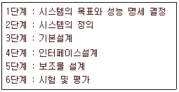
- 화면 설계
- 작업 설계
- 직무 분석
- 기능 할당
(정답률: 72%)
25. 다음 중 화학설비에 대한 안전성 평가에 있어 정량적 평가항목에 해당되지 않는 것은?
- 공정
- 취급물질
- 압력
- 화학설비용량
(정답률: 75%)
26. 자동차 엔진의 수명은 지수분포를 따르는 경우 신뢰도를 95%를 유지시키면서 8000시간을 사용하기 위한 적합한 고장률은 약 얼마인가
- 3.4x10-6 /시간
- 6.4x10-6 /시간
- 8.2x10-6 /시간
- 9.5x10-6 /시간
(정답률: 47%)
27. 다음 중 인간공학을 기업에 적용할 때의 기대효과로 볼 수 없는 것은?
- 노사 간의 신뢰 저하
- 제품과 작업의 질 향상
- 작업자의 건강 및 안전 향상
- 이직률 및 작업손실시간의 감소
(정답률: 86%)
28. 매직넘버라고도 하며, 인간이 절대식별시 작업 기억 중에 유지할 수 있는 항목의 최대수를 나타낸 것은?
- 3±1
- 7±2
- 10±1
- 20±2
(정답률: 74%)
29. 다음 중 청각적 표시장치보다 시각적 표시장치를 이용하는 경우가 더 유리한 경우는?
- 메시지가 간단한 경우
- 메시지가 추후에 재참조되지 않는 경우
- 직무상 수신자가 자주 움직이는 경우
- 메시지가 즉각적인 행동을 요구하지 않는 경우
(정답률: 75%)
30. 다음 중 FTA(Fault Tree Analysis)에 관한 설명으로 가장 적절한 것은?
- 복잡하고, 대형화된 시스템의 신뢰성 분석에는 적절하지 않다.
- 시스템 각 구성요소의 기능을 정상인가 또는 고장인가로 점진적으로 구분 짓는다.
- “그것이 발생하기 위해서는 무엇이 필요한가” 라는 것은 연역적이다.
- 사건들을 일련의 이분(binary) 의사 결정 분기들로 모형화한다.
(정답률: 58%)
31. 다음 중 욕조곡선에서의 고장 형태에서 일정한 형태의 고장율이 나타나는 구간은?
- 초기 고장구간
- 마모 고장구간
- 피로 고장구간
- 우발 고장구간
(정답률: 68%)
32. 한 대의 기계를 10시간 가동하는 동안 4회의 고장이 발생하였고, 이때의 고장수리시간이 다음 표와 같을 때 MTTR(Mean Time To Repair)은 얼마인가?
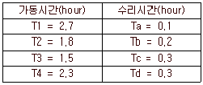
- 0.225시간/회
- 0.325시간/회
- 0.425시간/회
- 0.525시간/회
(정답률: 50%)
33. 다음 중 진동의 영향을 가장 많이 받는 인간의 성능은?
- 추적(tracking) 능력
- 감시(monitoring) 작업
- 반응시간(reaction time)
- 형태식별(pattern recognition)
(정답률: 52%)
34. 다음 중 소음에 대한 대책으로 가장 적합하지 않은 것은?
- 소음원의 통제
- 소음의 격리
- 소음의 분배
- 적절한 배치
(정답률: 65%)
35. 어떤 결함수를 분석하여 minimal cut set을 구한 결과 다음과 같았다. 각 기본사상의 발생확률을 qi, i=1,2,3 이라 할 때 정상사상의 발생확률함수로 옳은 것은?
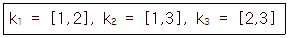
- q1q2 + q1q2 - q2q3
- q1q2 + q1q3 - q2q3
- q1q2 + q1q3 + q2q3 - q1q2q3
- q1q2 + q1q3 + q2q3 - 2q1q2q3
(정답률: 73%)
36. 다음 중 Fitts의 법칙에 관한 설명으로 옳은 것은?
- 표적이 크고 이동거리가 길수록 이동시간이 증가한다.
- 표적이 작고 이동거리가 길수록 이동시간이 증가한다.
- 표적이 크고 이동거리가 짧을수록 이동시간이 증가한다.
- 표적이 작고 이동거리가 짧을수록 이동시간이 증가한다.
(정답률: 70%)
37. FMEA에서 고장의 발생확률 β가 다음 값의 범위일 경우 고장의 영향으로 옳은 것은?
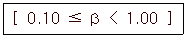
- 손실의 영향이 없음
- 실제 손실이 예상됨
- 실제 손실이 발생됨
- 손실 발생의 가능성이 있음
(정답률: 56%)
38. 인간의 생리적 부담 척도 중 국소적 근육 활동의 척도로 가장 적합한 것은?
- 혈압
- 맥박수
- 근전도
- 점멸융합 주파수
(정답률: 77%)
39. 재해예방 측면에서 시스템의 FT에서 상부측 정상사상의 가장 가까운 쪽에 OR 게이트를 인터록이나 안전장치 등을 활용하여 AND 게이트로 바꿔주면 이 시스템의 재해율에는 어떠한 현상이 나타나겠는가
- 재해율에는 변화가 없다.
- 재해율의 급격한 증가가 발생한다.
- 재해율의 급격한 감소가 발생한다.
- 재해율의 점진적인 증가가 발생한다.
(정답률: 70%)
40. 다음 중 중(重)작업의 경우 작업대의 높이로 가장 적절한 것은?
- 허리 높이보다 0~10cm 정도 낮게
- 팔꿈치 높이보다 10~20cm 정도 높게
- 팔꿈치 높이보다 15~20cm 정도 낮게
- 어깨 높이보다 30~40cm 정도 높게
(정답률: 63%)
3과목: 기계위험방지기술
41. 밀링작업의 안전수칙이 아닌 것은?
- 주축속도를 변속시킬 때는 반드시 주축이 정지한 후에 변환한다.
- 절삭 공구를 설치할 때에는 전원을 반드시 끄고 한다.
- 정면밀링커터 작업 시 날끝과 동일높이에서 확인하며 작업한다.
- 작은 칩의 제거는 브러쉬나 청소용 솔을 사용하며 제거한다.
(정답률: 79%)
42. 셰이퍼(shaper) 작업에서 위험요인과 가장 거리가 먼 것은?
- 가공칩(chip) 비산
- 바이트(bite)의 이탈
- 램(ram) 말단부 충돌
- 척-핸들(chuck-handle) 이탈
(정답률: 57%)
43. 안전계수가 6인 체인의 정격하중이 100kg 일 경우 이체인의 극한강도는 몇 kg 인가
- 0.06
- 16.67
- 26.67
- 600
(정답률: 65%)
44. 크레인의 사용 중 하중이 정격을 초과하였을 때 자동적으로 상승이 정지되는 장치는
- 해지장치
- 비상정지장치
- 권과방지장치
- 과부하방지장치
(정답률: 70%)
45. 현장에서 사용 중인 크레인의 거더 밑면에 균열이 발생되어 이를 확인하려고 하는 경우 비파괴검사방법 중 가장 편리한 검사 방법은?
- 초음파탐상검사
- 방사선투과검사
- 자분탐상검사
- 액체침투탐상검사
(정답률: 51%)
46. 광전자식 방호장치를 설치한 프레스에서 광선을 차단한후 0.2초 후에 슬라이드가 정지하였다. 이 때 방호장치의 안전거리는 최소 몇 mm 이상이어야 하는가
- 140
- 200
- 260
- 320
(정답률: 58%)
47. 기계설비의 안전조건 중 외형의 안전화에 해당하는 것은?
- 기계의 안전기능을 기계설비에 내장하였다.
- 페일 세이프 및 풀 푸르프의 기능을 가지는 장치를 적용하였다.
- 강도의 열화를 고려하여 안전율을 최대로 고려하여 설계하였다.
- 작업자가 접촉할 우려가 있는 기계의 회전부에 덮개를 씌우고 안전색채를 사용하였다.
(정답률: 82%)
48. 인터록(Interlock)장치에 해당하지 않는 것은?
- 연삭기의 워크레스트
- 사출기의 도어잠금장치
- 자동화라인의 출입시스템
- 리프트의 출입문 안전장치
(정답률: 69%)
49. 연삭숫돌 교환 시 연삭숫돌을 끼우기 전에 숫돌의 파손이나 균열의 생성 여부를 확인해 보기 위한 검사방법이 아닌 것은?
- 음향검사
- 회전검사
- 균형검사
- 진동검사
(정답률: 48%)
50. 아세틸렌 용기의 사용 시 주의사항으로 아닌 것은?
- 충격을 가하지 않는다.
- 화기나 열기를 멀리한다.
- 아세틸렌 용기를 뉘어 놓고 사용한다.
- 운반시에는 반드시 캡을 씌우도록 한다.
(정답률: 84%)
51. 보일러 발생증기가 불안정하게 되는 현상이 아닌 것은?
- 캐리 오버(carry over)
- 프라이밍(priming)
- 절탄기(economizer)
- 포밍(forming)
(정답률: 72%)
52. 산업안전보건법령상 보일러의 폭발위험 방지를 위한 방호장치가 아닌 것은?
- 급정지장치
- 압력제한스위치
- 압력방출장치
- 고저수위 조절장치
(정답률: 77%)
53. 지게차의 헤드가드에 관한 기준으로 틀린 것은?(관련 규정 개정전 문제로 여기서는 기존 정답인 2번을 누르면 정답 처리됩니다. 자세한 내용은 해설을 참고하세요.)
- 4톤 이하의 지게차에서 헤드가드의 강도는 지게차 최대하중의 2배 값의 등분포정하중에 견딜 수 있을 것
- 상부틀의 각 개구의 폭 또는 길이가 25cm 미만일 것
- 운전자가 앉아서 조작하는 방식의 지게차의 경우에는 운전자의 좌석 윗면에서 헤드가드의 상부틀 아랫면 까지의 높이가 1m 이상일 것
- 운전자가 서서 조작하는 방식의 지게차의 경우에는 운전석의 바닥면에서 헤드가드의 상부틀 하면까지의 높이가 2m 이상일 것
(정답률: 74%)
54. 산업안전보건법령상 크레인에 전용탑승설비를 설치하고 근로자를 달아 올린상태에서 작업에 종사시킬 경우 근로자의 추락 위험을 방지하기 위하여 실시해야 할 조치 사항으로 적합하지 않은 것은?
- 승차석 외의 탑승 제한
- 안전대나 구명줄의 설치
- 탑승설비의 하강 시 동력하강방법을 사용
- 탑승설비가 뒤집히거나 떨어지지 않도록 필요한 조치
(정답률: 58%)
55. 원심기의 안전에 관한 설명으로 적절하지 않은 것은?
- 원심기에는 덮개를 설치하여야 한다.
- 원심기의 최고사용회전수를 초과하여 사용 하여서는 아니 된다.
- 원심기에 과압으로 인한 폭발을 방지하기 위하여 압력 방출장치를 설치하여야 한다.
- 원심기로부터 내용물을 꺼내거나 원심기의 정비, 청소, 검사, 수리작업을 하는 때에는 운전을 정지시켜야 한다.
(정답률: 73%)
56. 기계의 고정부분과 회전하는 동작부분이 함께 만드는 위험점의 예로 옳은 것은?
- 굽힘기계
- 기어와 랙
- 교반기의 날개와 하우스
- 회전하는 보링머신의 천공공구
(정답률: 63%)
57. 프레스의 방호장치에서 게이트가드(Gate Guard)식 방호장치의 종류를 작동방식에 따라 분류할 때 해당되지 않는 것은?
- 경사식
- 하강식
- 도립식
- 횡슬라이드식
(정답률: 63%)
58. 600rpm으로 회전하는 연삭숫돌의 지름이 20cm일 때 원주속도는 약 몇 m/min인가?
- 37.7
- 251
- 377
- 1200
(정답률: 54%)
59. 수공구 취급시의 안전수칙으로 적절하지 않은 것은?
- 해머는 처음부터 힘을 주어 치지 않는다.
- 렌치는 올바르게 끼우고 몸 쪽으로 당기지 않는다.
- 줄의 눈이 막힌 것은 반드시 와이어브러시로 제거한다.
- 정으로는 담금질된 재료를 가공하여서는 안된다.
(정답률: 66%)
60. 금형의 안전화에 관한 설명으로 틀린 것은?
- 금형을 설치하는 프레스의 T홈 안길이는 설치 볼트 직경의 2배 이상으로 한다.
- 맞춤 핀을 사용할 때에는 헐거움 끼워맞춤으로 하고, 이를 하형에 사용할 때에는 사용할 때에는 낙하방지의 대책을 세워둔다.
- 금형의 사이에 신체 일부가 들어가지 않도록 이동 스트리퍼와 다이의 간격은 8mm 이하로 한다.
- 대형 금형에서 생크가 헐거워짐이 예상될 경우 생크만으로 상형을 슬라이드에 설치하는 것을 피하고 볼트 등을 사용하여 조인다.
(정답률: 60%)
4과목: 전기위험방지기술
61. 흡수성이 강한 물질은 가습에 의한 부도체의 정전기 대전방지 효과의 성능이 좋다. 이러한 작용을 하는 기를 갖는 물질이 아닌 것은?
- OH
- C6H6
- NH2
- COOH
(정답률: 53%)
62. 통전 경로별 위험도를 나타낼 경우 위험도가 큰 순서대로 나열한 것은?
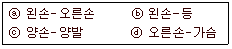
- ⓐ-ⓒ-ⓑ-ⓓ
- ⓐ-ⓓ-ⓒ-ⓑ
- ⓓ-ⓒ-ⓑ-ⓐ
- ⓓ-ⓐ-ⓒ-ⓑ
(정답률: 53%)
63. 다음은 어떤 방폭구조에 대한 설명인가
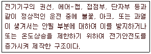
- 안전증방폭구조
- 내압방폭구조
- 몰드방폭구조
- 본질안전방폭구조
(정답률: 66%)
64. 전기 작업에서 안전을 위한 일반 사항이 아닌 것은?
- 전로의 충전여부 시험은 검전기를 사용한다.
- 단로기의 개폐는 차단기의 차단 여부를 확인 한 후에 한다.
- 전선을 연결할 때 전원 쪽을 먼저 연결하고 다른 전선을 연결한다.
- 첨가전화선에는 사전에 접지 후 작업을 하며 끝난 후 반드시 제거해야 한다.
(정답률: 76%)
65. 근로자가 노출된 충전부 또는 그 부근에서 작업 함으로써 감전될 우려가 있는 경우에는 작업에 들어가기 전에 해당 전로를 차단하여야 하나 전로를 차단하지 않아도 되는 예외 기준이 있다. 그 예외 기준이 아닌 것은?
- 생명유지장치, 비상경보설비, 폭발위험장소의 환기설비, 비상조명설비 등의 장치ㆍ설비의 가동이 중지되어 사고의 위험이 증가되는 경우
- 관리감독자를 배치하여 짧은 시간 내에 작업을 완료할 수 있는 경우
- 기기의 설계상 또는 작동상 제한으로 전로 차단이 불가능한 경우
- 감전, 아크 등으로 인한 화상, 화재ㆍ폭발의 위험이 없는 것으로 확인된 경우
(정답률: 61%)
66. 가연성 증기나 먼지 등이 체류할 우려가 있는 장소의 전기회로에 설치하여야 하는 누전경보기의 수신기가 갖추어야할 성능으로 옳은 것은?
- 음향장치를 가진 수신기
- 차단기구를 가진 수신기
- 가스감지기를 가진 수신기
- 분진농도 측정기를 가진 수신기
(정답률: 46%)
67. 활선작업을 시행할 때 감전의 위험을 방지하고 안전한 작업을 하기 위한 활선장구 중 충전중인 전선의 변경작업이나 활선작업으로 애자 등을 교환할 때 사용하는 것은?
- 점프선
- 활선커터
- 활선시메라
- 디스콘스위치 조작봉
(정답률: 67%)
68. 다음 작업조건에 적합한 보호구로 옳은 것은?
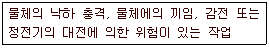
- 안전모
- 안전화
- 방열복
- 보안면
(정답률: 60%)
69. 다음 ( ) 안의 알맞은 내용을 나타낸 것은?
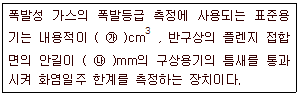
- ㉮ 6000 ㉯ 0.4
- ㉮ 1800 ㉯ 0.6
- ㉮ 4500 ㉯ 8
- ㉮ 8000 ㉯ 25
(정답률: 52%)
70. 전기에 의한 감전사고를 방지하기 위한 대책이 아닌 것은?
- 전기기기에 대한 정격 표시
- 전기설비에 대한 보호 접지
- 전기설비에 대한 누전 차단기 설치
- 충전부가 노출된 부분은 절연방호구 사용
(정답률: 78%)
71. 전기화상 사고 시의 응급조치 사항으로 틀린 것은?
- 상처에 달라붙지 않은 의복은 모두 벗긴다.
- 상처 부위에 파우더, 향유 기름 등을 바른다.
- 감전자를 담요 등으로 감싸되 상처부위가 닿지 않도록 한다.
- 화상부위를 세균 감염으로부터 보호하기 위하여 화상용 붕대를 감는다.
(정답률: 74%)
72. 220V 전압에 접촉된 사람의 인체저항이 약 1000Ω일 때 인체 전류와 그 결과 값의 위험성 여부로 알맞은 것은?
- 22mA, 안전
- 220mA, 안전
- 22mA, 위험
- 220mA, 위험
(정답률: 57%)
73. 금속제 외함을 가지는 사용전압이 60V를 초과하는 저압의 기계 기구로서 사람이 쉽게 접촉할 수 있는 곳에 시설하는 것에 전기를 공급하는 전로에는 지락차단장치를 설치하여야하나 적용하지 않아도 되는 예외 기준이 있다. 그 예외 기준으로 틀린 것은?(오류 신고가 접수된 문제입니다. 반드시 정답과 해설을 확인하시기 바랍니다.)
- 기계 기구를 건조한 장소에 시설하는 경우
- 기계 기구가 고무, 합성수지, 기타 절연물로 피복된 경우
- 기계 기구에 설치한 제3종 접지공사의 접지 저항값이 10Ω 이하인 경우
- 전원측에 절연 변압기(2차 전압 300V이하)를 시설하고 부하 측을 비접지로 시설하는 경우
(정답률: 42%)
74. 교류 아크용접기의 사용에서 무부하 전압이 80V, 아크 전압 25V, 아크 전류 300A일 경우 효율은 약 몇 % 인가? (단, 내부손실은 4kW 이다.)
- 65.2
- 70.5
- 75.3
- 80.6
(정답률: 35%)
75. 대전이 큰 엷은 층상의 부도체를 박리할 때 또는 엷은 층상의 대전된 부도체의 뒷면에 밀접한 접지체가 있을 때 표면에 연한 수지상의 발광을 수반하여 발생하는 방전은?
- 불꽃 방전
- 스트리머 방전
- 코로나 방전
- 연면 방전
(정답률: 66%)
76. 정전기가 발생되어도 즉시 이를 방전하고 전하의 축적을 방지하면 위험성이 제거된다. 정전기에 관한 내용으로 틀린 것은?
- 대전하기 쉬운 금속부분에 접지한다.
- 작업장 내 습도를 높여 방전을 촉진한다.
- 공기를 이온화하여 (+)는 (-)로 중화시킨다.
- 절연도가 높은 플라스틱류는 전하의 방전을 촉진시킨다.
(정답률: 56%)
77. 폭연성 분진 또는 화약류의 분말이 전기설비가 발화원이 되어 폭발할 우려가 있는 곳에 시설하는 저압 옥내 전기 설비의 공사 방법으로 옳은 것은?
- 금속관 공사
- 합성수지관 공사
- 가요전선관 공사
- 캡타이어 케이블 공사
(정답률: 47%)
78. 정전기 발생에 영향을 주는 요인이 아닌 것은?
- 물체의 분리속도
- 물체의 특성
- 물체의 표면상태
- 외부공기의 풍속
(정답률: 77%)
79. 그림과 같은 전기기기 A점에서 완전 지락이 발생하였다. 이 전기기기의 외함에 인체가 접촉되었을 경우 인체를 통해서 흐르는 전류는 약 몇 mA 인가? (단 인체의 저항은 3000Ω 이다)
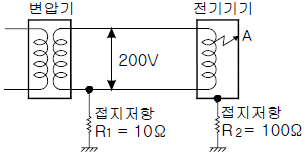
- 60.42
- 30.21
- 15.11
- 7.55
(정답률: 38%)
80. 3상 3선식 전선로의 보수를 위하여 정전작업을 할 때 취하여야 할 기본적인 조치는
- 1선을 접지한다.
- 2선을 단락 접지한다.
- 3선을 단락 접지한다.
- 접지를 하지 않는다.
(정답률: 71%)
5과목: 화학설비위험방지기술
81. 20℃, 1기압의 공기를 5기압으로 단열압축하면 공기의 온도는 약 몇 ℃ 가 되겠는가? (단, 공기의 비열비는 1.4 이다.)
- 32
- 191
- 3⑤
- 464
(정답률: 61%)
82. 위험물의 취급에 관한 설명으로 틀린 것은?
- 모든 폭발성 물질은 석유류에 침지시켜 보관해야 한다.
- 산화성 물질의 경우 가연물과의 접촉을 피해야 한다.
- 가스 누설의 우려가 있는 장소에서는 점화원의 철저한 관리가 필요하다.
- 도전성이 나쁜 액체는 정전기 발생을 방지하기 위한 조치를 취한다.
(정답률: 80%)
83. 비점이나 인화점이 낮은 액체가 들어 있는 용기 주위에 화재 등으로 인하여 가열되면, 내부의 비등현상으로 인한 압력 상승으로 용기의 벽면이 파열되면서 그 내용물이 폭발적으로 증발, 팽창하면서 폭발을 일으키는 현상을 무엇이라 하는가?
- BLEVE
- UVCE
- 개방계 폭발
- 밀폐계 폭발
(정답률: 79%)
84. 다음 중 산화반응에 해당하는 것을 모두 나타낸 것은?
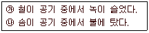
- ㉮
- ㉯
- ㉮, ㉯
- 없음
(정답률: 63%)
85. 다음 중 화재 예방에 있어 화재의 확대방지를 위한 방법으로 적절하지 않은 것은?
- 가연물량의 제한
- 난연화 및 불연화
- 화재의 조기발견 및 초기 소화
- 공간의 통합과 대형화
(정답률: 81%)
86. 단위공정시설 및 설비로부터 다른 단위공정시설 및 설비 사이의 안전거리는 설비의 바깥면부터 얼마 이상이 되어야 하는가
- 5m
- 10m
- 15m
- 20m
(정답률: 69%)
87. 물과의 반응으로 유독한 포스핀가스를 발생하는 것은?
- HCl
- NaCl
- Ca3P2
- Al(OH)3
(정답률: 63%)
88. 다음 [표]를 참조하여 메탄 70vol%, 프로판 21vol%, 부탄 9vol% 인 혼합가스의 폭발범위를 구하면 약 몇 vol% 인가?
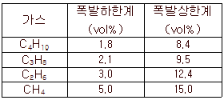
- 3.45 ~ 9.11
- 3.45 ~ 12.58
- 3.85 ~ 9.11
- 3.85 ~ 12.58
(정답률: 64%)
89. 다음 중 관로의 방향을 변경하는데 가장 적합한 것은?
- 소켓
- 엘보우
- 유니온
- 플러그
(정답률: 80%)
90. 비교적 저압 또는 상압에서 가연성의 증기를 발생하는 유류를 저장하는 탱크에서 외부에 그 증기를 방출하기도 하고, 탱크 내에 외기를 흡입하기도 하는 부분에 설치하며, 가는 눈금의 금망이 여러 개 겹쳐진 구조로 된 안전장치는?
- check valve
- flame arrester
- ventstack
- rupture disk
(정답률: 60%)
91. 가연성 가스 A의 연소범위를 2.2~9.5vol%라고 할 때 가스 A의 위험도는 약 얼마인가
- 2.52
- 3.32
- 4.91
- 5.64
(정답률: 69%)
92. 다음 중 Halon 1211 의 화학식으로 옳은 것은?
- CH2FBr
- CH2ClBr
- CF2HCl
- CF2ClBr
(정답률: 63%)
93. 연소에 관한 설명으로 틀린 것은?
- 인화점이 상온보다 낮은 가연성 액체는 상온에서 인화의 위험이 있다.
- 가연성 액체를 발화점이상으로 공기 중에서 가열하면 별도의 점화원이 없어도 발화할 수 있다.
- 가연성 액체는 가열되어 완전 열분해되지 않으면 착화원이 있어도 연소하지 않는다.
- 열 전도도가 클수록 연소하기 어렵다.
(정답률: 58%)
94. 탄산수소나트륨을 주요성분으로 하는 것은 제 몇 종 분말소화기인가
- 제1종
- 제2종
- 제3종
- 제4종
(정답률: 55%)
95. 열교환기의 열 교환 능률을 향상시키기 위한 방법이 아닌 것은?
- 유체의 유속을 적절하게 조절한다.
- 유체의 흐르는 방향을 병류로 한다.
- 열교환기 입구와 출구의 온도차를 크게 한다.
- 열전도율이 높은 재료를 사용한다.
(정답률: 69%)
96. 다음은 산업안전보건기준에 관한 규칙에서 정한 폭발 또는 화재 등의 예방에 관한 내용이다. ( )에 알맞은 용어는?
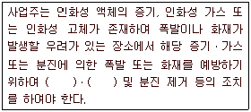
- 통풍, 세척
- 통풍, 환기
- 제습, 세척
- 환기, 제습
(정답률: 74%)
97. 다음 중 분진의 폭발위험성을 증대시키는 조건에 해당하는 것은?
- 분진의 발열량이 작을수록
- 분위기 중 산소 농도가 작을수록
- 분진 내의 수분 농도가 작을수록
- 표면적이 입자체적에 비교하여 작을수록
(정답률: 66%)
98. 위험물안전관리법령에서 정한 제3류 위험물에 해당하지 않는 것은?
- 나트륨
- 알킬알루미늄
- 황린
- 니트로글리세린
(정답률: 62%)
99. 일반적인 자동제어 시스템의 작동순서를 바르게 나열한 것은?
- 검출 → 조절계 → 공정상황 → 밸브
- 공정상황 → 검출 → 조절계 → 밸브
- 조절계 → 공정상황 → 검출 → 밸브
- 밸브 → 조절계 → 공정상황 → 검출
(정답률: 64%)
100. 산업안전보건법령상 물질안전보건자료 작성 시 포함되어 있는 주요 작성항목이 아닌것은? (단, 기타 참고사항 및 작성자가 필요에 의해 추가하는 세부 항목은 고려하지 않는다.)
- 법적규제 현황
- 폐기 시 주의사항
- 주요 구입 및 폐기처
- 화학제품과 회사에 관한 정보
(정답률: 58%)
6과목: 건설안전기술
101. 터널작업에 있어서 자동경보장치가 설치된 경우에 이 자동경보장치에 대하여 당일의 작업시작 전 점검하여야 할 사항이 아닌 것은?
- 계기의 이상 유무
- 검지부의 이상 유무
- 경보장치의 작동 상태
- 환기 또는 조명시설의 이상 유무
(정답률: 72%)
102. 근로자의 추락 등의 위험을 방지하기 위한 안전난간의 설치기준으로 옳지 않은 것은?
- 상부 난간대와 중간 난간대는 난간 길이 전체에 걸쳐 바닥면등과 평행을 유지할 것
- 발끝막이판은 바닥면등으로부터 20cm 이하의 높이를 유지할 것
- 난간대는 지름 2.7cm 이상의 금속제 파이프나 그 이상의 강도가 있는 재료일 것
- 안전난간은 구조적으로 가장 취약한 지점에서 가장 취약한 방향으로 작용하는 100kg 이상의 하중에 견딜 수 있는 튼튼한 구조일 것
(정답률: 57%)
103. 외줄비계ㆍ쌍줄비계 또는 돌출비계는 벽이음 및 버팀을 설치하여야 하는데 강관비계 중 단관비계로 설치할 때의 조립간격으로 옳은 것은? (단, 수직방향, 수평방향의 순서임)
- 4m, 4m
- 5m, 5m
- 5.5m, 7.5m
- 6m, 8m
(정답률: 65%)
104. 구축물에 안전진단 등 안전성 평가를 실시하여 근로자에게 미칠 위험성을 미리 제거하여야 하는 경우가 아닌 것은?
- 구축물 또는 이와 유사한 시설물의 인근에서 굴착ㆍ항타작업 등으로 침하ㆍ균열 등이 발생하여 붕괴의 위험이 예상될 경우
- 구조물, 건축물, 그 밖의 시설물이 그 자체의 무게ㆍ적설ㆍ풍압 또는 그 밖에 부가되는 하중 등으로 붕괴 등의 위험이 있을 경우
- 화재 등으로 구축물 또는 이와 유사한 시설물의 내력(耐力)이 심하게 저하되었을 경우
- 구축물의 구조체가 과도한 안전측으로 설계가 되었을 경우
(정답률: 79%)
1⑤. 사급자재비가 30억, 직접노무비가 35억, 관급자재비가 20억인 빌딩신축공사를 할 경우 계상해야할 산업안전보건관리비는 얼마인가? (단, 공사종류는 일반건설공사(갑)임) (문제 오류로 실제 시험에서는 전항 정답 처리 되었습니다. 여기서는 1번을 누르면 정답 처리 됩니다.)
- 122,000,000원
- 146,640,000원
- 153,850,000원
- 159,800,000원
(정답률: 66%)
106. 가설구조물에서 많이 발생하는 중대 재해의 유형으로 가장 거리가 먼 것은?
- 도괴재해
- 낙하물에 의한 재해
- 굴착기계와의 접촉에 의한 재해
- 추락재해
(정답률: 67%)
107. 다음 토공기계 중 굴착기계와 가장 관계있는 것은?
- Clam shell
- Road Roller
- Shovel loader
- Belt conveyer
(정답률: 67%)
108. 크레인을 사용하여 작업을 하는 때 작업시작 전 점검 사항이 아닌 것은?
- 권과방지장치ㆍ브레이크ㆍ클러치 및 운전장치의 기능
- 방호장치의 이상유무
- 와이어로프가 통하고 있는 곳의 상태
- 주행로의 상측 및 트롤리가 횡행하는 레일의 상태
(정답률: 43%)
109. 차량계 하역운반기계를 사용하는 작업에 있어 고려되어야 할 사항과 가장 거리가 먼 것은?
- 작업지휘자의 배치
- 유도자의 배치
- 갓길 붕괴 방지 조치
- 안전관리자의 선임
(정답률: 62%)
110. 철골작업을 중지하여야 하는 조건에 해당되지 않는 것은?
- 풍속이 초당 10m 이상인 경우
- 지진이 진도 4 이상의 경우
- 강우량이 시간당 1mm 이상의 경우
- 강설량이 시간당 1cm 이상의 경우
(정답률: 66%)
111. 달비계(곤돌라의 달비계는 제외)의 최대적재 하중을 정할 때 사용하는 안전계수의 기준으로 옳은 것은?
- 달기체인의 안전계수는 10 이상
- 달기강대와 달비계의 하부 및 상부지점의 안전계수는 목재의 경우 2.5 이상
- 달기와이어로프의 안전계수는 5 이상
- 달기강선의 안전계수는 10 이상
(정답률: 60%)
112. 점토질 지반의 침하 및 압밀 재해를 막기 위하여 실시하는 지반개량 탈수공법으로 적당하지 않은 것은?
- 샌드드레인 공법
- 생석회 공법
- 진동 공법
- 페이퍼드레인 공법
(정답률: 56%)
113. 흙막이벽의 근입깊이를 깊게 하고, 전면의 굴착부분을 남겨두어 흙의 중량으로 대항하게 하거나, 굴착예정부분의 일부를 미리 굴착하여 기초콘크리트를 타설하는 등의 대책과 가장 관계 깊은 것은?
- 히빙현상이 있을 때
- 파이핑현상이 있을 때
- 지하수위가 높을 때
- 굴착깊이가 깊을 때
(정답률: 64%)
114. 건물외부에 낙하물 방지망을 설치할 경우 수평면과의 가장 적절한 각도는
- 5° 이상, 10° 이하
- 10° 이상, 15° 이하
- 15° 이상, 20° 이하
- 20° 이상, 30° 이하
(정답률: 54%)
115. 콘크리트 타설작업의 안전대책으로 옳지 않은 것은?
- 작업 시작전 거푸집동바리 등의 변형, 변위 및 지반 침하 유무를 점검한다.
- 작업 중 감시자를 배치하여 거푸집동바리 등의 변형, 변위 유무를 확인한다.
- 슬래브콘크리트 타설은 한쪽부터 순차적으로 타설하여 붕괴 재해를 방지해야한다.
- 설계도서상 콘크리트 양생기간을 준수하여 거푸집동바리 등을 해체한다.
(정답률: 68%)
116. 굴착기계의 운행 시 안전대책으로 옳지 않은 것은?
- 버킷에 사람의 탑승을 허용해서는 안된다.
- 운전반경 내에 사람이 있을 때 회전은 10rpm 이하의 느린 속도로 하여야 한다.
- 장비의 주차 시 경사지나 굴착작업장으로부터 충분히 이격시켜 주차한다.
- 전선이나 구조물 등에 인접하여 붐을 선회해야 될 작업에는 사전에 회전반경, 높이제한 등 방호조치를 강구한다.
(정답률: 76%)
117. 다음 설명에서 제시된 산업안전보건법에서 말하는 고용노동부령으로 정하는 공사에 해당하지 않는 것은?
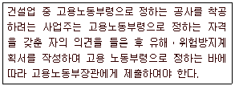
- 지상높이가 31m 인 건축물의 건설ㆍ개조 또는 해체
- 최대 지간길이가 50m 인 교량건설 등의 공사
- 깊이가 8m 인 굴착공사
- 터널 건설공사
(정답률: 78%)
118. 유해ㆍ위험방지 계획서 제출 시 첨부서류에 해당하지 않는 것은?
- 교통처리계획
- 안전관리 조직표
- 공사개요서
- 공사현장의 주변현황 및 주변과의 관계를 나타내는 도면
(정답률: 58%)
119. 다음 중 건설재해대책의 사면보호공법에 해당하지 않는 것은?
- 쉴드공
- 식생공
- 뿜어 붙이기공
- 블럭공
(정답률: 32%)
120. 토석붕괴 방지방법에 대한 설명으로 옳지 않은 것은?
- 말뚝(강관, H형강, 철근콘크리트)을 박아 지반을 강화 시킨다.
- 활동의 가능성이 있는 토석은 제거한다.
- 지표수가 침투되지 않도록 배수시키고 지하수위 저하를 위해 수평보링을 하여 배수시킨다.
- 활동에 의한 붕괴를 방지하기 위해 비탈면, 법면의 상단을 다진다.
(정답률: 55%)